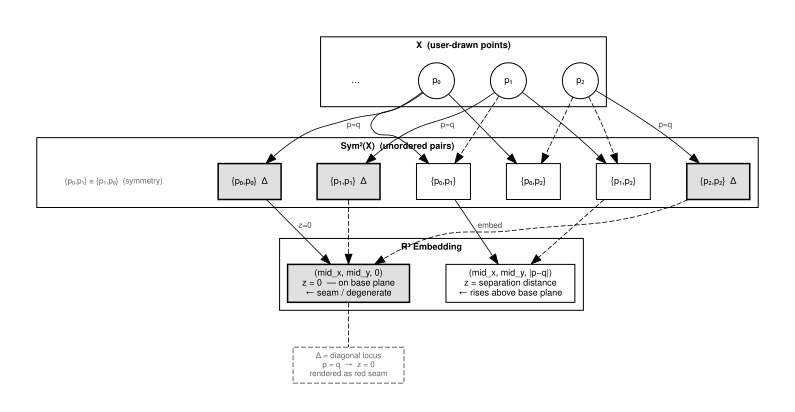
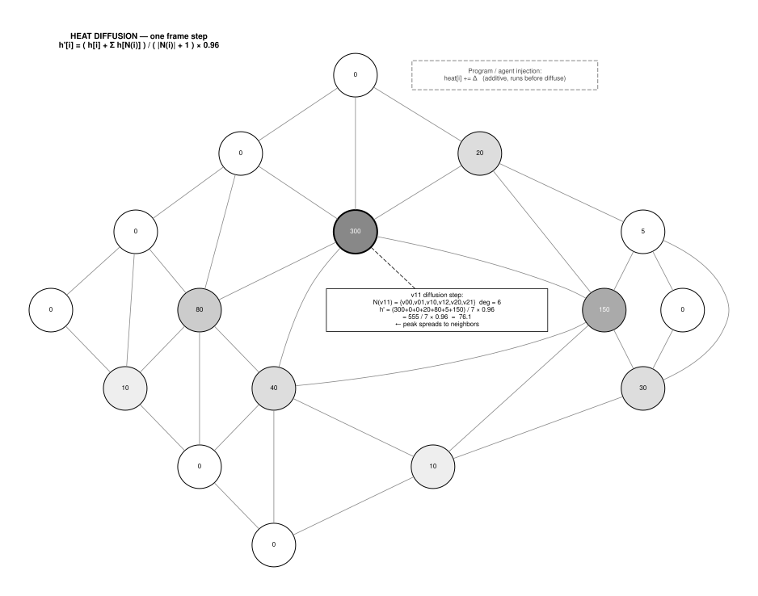
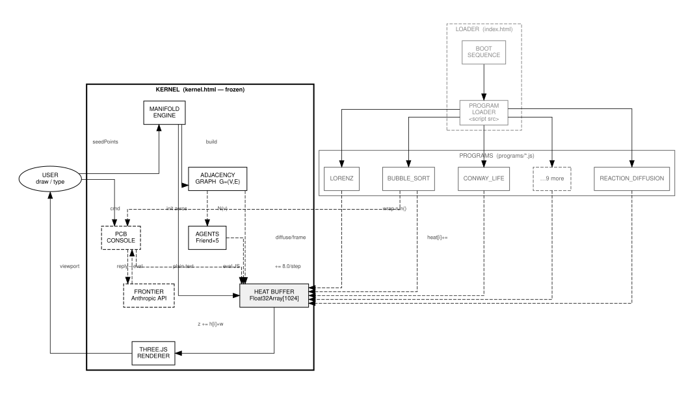
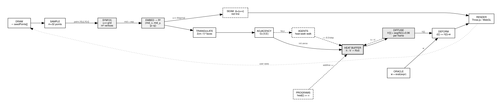

A Manifold Simulator Kernel from First Principles
2026-03-24
ARK_ID: 1.0.2.10 Revision: 0.1 Status: WORKING DRAFT
SEW (Symmetric Embedding Workbench) is a browser-resident manifold simulator built on three primitives: a symmetric product space construction, a heat diffusion signal model, and a frozen kernel with an open program injection interface. This paper derives each layer from first principles, establishes the kernel stability invariant, and specifies the program injection protocol. Dot diagrams formalize the data flow and architectural boundaries.
Most interactive geometry tools begin with a fixed mesh and let the user deform it. SEW inverts this. The user draws arbitrary points in a plane. The workbench constructs a canonical higher-dimensional manifold from those points using the symmetric product construction. Programs then run on that manifold — injecting signals, reading topology, reshaping the surface — without knowing how it was built.
The result is a general-purpose signal substrate. Any program that can write to a heat buffer indexed by vertex position can participate in the manifold’s dynamics. The geometry becomes a shared memory between concurrent programs and the user.
Begin with a finite set X of points in the plane, drawn by the user. X has no canonical ordering. The workbench must construct something meaningful from X without privileging any particular ordering of its elements.
The natural object is the set of unordered pairs:
Sym²(X) = { {p, q} : p, q ∈ X }This is the symmetric product of X with itself. It has |X|² elements if we allow p = q (the diagonal), or |X|(|X|-1)/2 + |X| elements counting the diagonal once.
The diagonal Δ ⊂ Sym²(X) is the locus where p = q:
Δ = { {p, p} : p ∈ X }Δ is geometrically degenerate — both points in the pair coincide. It is rendered as the red seam line in the viewport. Everything off the diagonal is a genuine two-point configuration.
To embed Sym²(X) into R³ we need three scalar functions of a pair {p, q}:
x({p,q}) = (px + qx) / 2 — midpoint x
y({p,q}) = (py + qy) / 2 — midpoint y
z({p,q}) = |p - q| — separation distanceThe midpoint coordinates place the pair in the plane of X. The separation distance lifts it above that plane proportionally to how far apart the two points are. Diagonal points (p = q) land at z = 0, the base plane. Off-diagonal pairs rise above it.
This embedding is symmetric by construction: swapping p and q produces the same point in R³. It is also continuous: nearby pairs in X map to nearby points in the embedding.
With a sampled set of m points from X (m = 32 in the current implementation), the embedding produces an m × m grid of vertices. Vertex (u, v) encodes the pair {X[u], X[v]}.
Triangulation: connect (u,v)→(u+1,v)→(u,v+1) and (u+1,v)→(u+1,v+1)→(u,v+1) for all u, v in [0, m-1). This produces 2(m-1)² triangles.
The resulting mesh is the concrete manifold SEW operates on.
From the triangle index buffer, derive a vertex adjacency graph G = (V, E):
V = { (u,v) : u,v ∈ [0,m) } |V| = m²
E = { {a,b} : a,b share a triangle edge }Each vertex has degree ≤ 6 (four-connected grid, triangulated). Deduplicate with Set to avoid double-counting. G is the substrate for heat diffusion and agent traversal.

Heat is a scalar field h: V → R≥0 defined on the manifold vertices. It serves as the universal communication channel between programs and the rendering engine.
The renderer reads heat each frame and adds h[i] × w to the z-coordinate of vertex i, where w is a time-varying oracle expression. High heat lifts a vertex; zero heat leaves it at rest.
Each frame, heat diffuses across the adjacency graph:
h'[i] = ( h[i] + Σ_{j ∈ N(i)} h[j] ) / ( |N(i)| + 1 ) × decaywhere N(i) is the neighbor set of vertex i and decay = 0.96. This is a single step of the graph Laplacian heat equation. It smooths local concentrations, propagates signals spatially, and ensures injected heat eventually dissipates without continuous input.
The discrete Laplacian here is the normalized graph Laplacian:
L_norm[i] = h[i] - ( Σ_{j ∈ N(i)} h[j] ) / |N(i)|Diffusion is equivalent to h’ = h - α × L_norm × h for small α.
Programs inject heat by writing directly to the heat buffer:
heat[i] += amount; // additive — stacks with other programs
heat[i] = value; // absolute — overrides
heat[i] = Math.min(heat[i] + amount, cap); // capped additiveAdditive injection is preferred. It composes correctly when multiple programs run simultaneously — each program’s signal adds to the manifold without needing to coordinate with others.

Agents (Friends) are particles that walk the adjacency graph G using a heat-seeking heuristic:
at each step:
with probability 0.15: move to a random neighbor (exploration)
with probability 0.85: move to the hottest neighbor (exploitation)
inject heat[current] += 8.0This is a stochastic gradient ascent on the heat field with exploration noise. Agents cluster at heat maxima, reinforce them by injecting more heat, and occasionally escape to explore cold regions. The system self-organizes: wherever a program concentrates heat, agents converge and amplify.
The kernel (kernel.html) is a frozen artifact. Its md5 hash is recorded at deployment and must not change between deployments. No program, script, or operator may modify it.
Invariant: md5(kernel.html) is constant for the lifetime of a kernel version.
md5(kernel.html) = 15e81f3b8064fb16ebb94f0626c4360dWhen the kernel must change (new primitive, breaking fix), the version number increments and a new kernel.html is issued. Old programs remain compatible or are explicitly ported.
This invariant enables:
Programs have read/write access to the following kernel globals:
| Symbol | Type | Description |
|---|---|---|
scene |
THREE.Scene | Three.js scene graph |
camera |
THREE.Camera | Perspective camera |
heat |
Float32Array | Heat buffer, length = m² (1024) |
adjacency |
Array<Array> | Vertex neighbor lists |
meshVertices |
Array<number> | Current vertex positions (flat xyz) |
originalVertices |
Array<number> | Rest-state vertex positions |
seedPoints |
Array<{x,y}> | User-drawn input points |
friendList |
Array<Friend> | Active agent instances |
pcb |
PCBInterpreter | Console — pcb.log() / pcb.run() |
flickerRate |
number | Material opacity oscillation rate |
wobbleBase |
number | Per-vertex position noise amplitude |
tick |
number | Frame counter, increments each RAF |
buildManifold |
function | Rebuild mesh from seedPoints array |
The POCKET_CUP_BOX_CONSOLE is a JavaScript REPL wired to the kernel
scope. It detects code (patterns containing = . () and
evals directly. Plain text with FRONTIER open routes to the Anthropic
API. Programs extend it by wrapping pcb.run:
const _orig = pcb.run.bind(pcb);
pcb.run = function(src) {
if (src.trim() === 'my.cmd') { /* handle */ return; }
_orig(src); // pass through to previous handler
};This forms a chain of responsibility. Programs wrap in load order. Each handler either consumes the command or delegates. The kernel’s base handler is always at the bottom.

Programs are plain JavaScript files loaded as
<script src> tags in index.html after
the kernel script. They execute synchronously in document order, in the
same window scope as the kernel. No module system, no sandbox, no
message passing.
<!-- PROGRAM LOADER -->
<script src="programs/bubble-sort.js"></script>
<script src="programs/reaction-diffusion.js"></script>
<!-- add programs here -->A conforming program must:
(function(){ ... })() to avoid
polluting global scope.module div into
#sidebar via
insertBefore(mod, firstChild)pcb.run if registering PCB commands, always
calling _orig for unknown inputpcb.log('PGM: NAME loaded. cmds: ...') on
successful initializationconst mod = document.createElement('div');
mod.className = 'module';
mod.id = 'pgm-myprogram';
mod.innerHTML = '<h3>MY_PROGRAM</h3><!-- controls -->';
document.getElementById('sidebar')
.insertBefore(mod, document.getElementById('sidebar').firstChild);Kernel CSS classes available: .module,
.btn, .btn-pcb, .matrix-grid,
.m-val.
Programs that write to heat must:
heat.length > 0 before writing (manifold may
not be built yet)heat[i] += x) over absolute
writesheat.length === N where N = 1024 for the
current m = 32 kernel
On page load, index.html runs a timed boot readout
before revealing the workbench. The sequence verifies the visual
expectation that loading is intentional and measurable, not accidental
latency.
ARK_BIOS v1.0.2.10
KERNEL HASH .............. VERIFIED
THREE.JS r128 ............ OK
ORBIT_CONTROLS ........... OK
MANIFOLD ENGINE .......... READY
PGM BUBBLE_SORT .......... OK
PGM REACTION_DIFFUSION ... OK
PGM LORENZ_ATTRACTOR ..... OK
PGM CONWAY_LIFE .......... OK
PGM WAVE_INTERFERENCE .... OK
PGM FIRE_SIM ............. OK
PGM LISSAJOUS ............ OK
PGM CHAOS_GAME ........... OK
PGM GRAVITY .............. OK
PGM AUDIO_REACTIVE ....... OK
PGM FLOW_FIELD ........... OK
PGM LANGTON_ANT .......... OK
ALL SYSTEMS .............. NOMINAL
ARK READY _The gold progress bar tracks cumulative program count. On completion the overlay dissolves and the workbench is revealed.
| Program | PCB Commands | Description |
|---|---|---|
bubble-sort |
sort.run sort.heat
sort.reset |
Sorts random array; sort.heat runs on manifold |
reaction-diffusion |
rd.spots rd.stripes
rd.mitosis |
Gray-Scott model — organic pattern emergence |
lorenz |
lorenz.start lorenz.chaos |
Lorenz attractor traces heat into nearest vertex |
life |
life.start life.glider
life.gun |
Conway’s Life — alive cells inject heat |
wave |
wave.start wave.chaos |
Interference moiré from multiple point sources |
fire |
fire.start fire.inferno |
Fire simulation — manifold becomes flame |
lissajous |
liss.go liss.spin
liss.flower |
Parametric curves auto-reify manifold geometry |
chaos |
chaos.sierpinski chaos.fern |
IFS chaos game — fractals grow into manifold |
gravity |
gravity.start gravity.collapse |
N-body orbits — potential wells dimple the mesh |
audio |
audio.mic audio.synth |
FFT → heat, manifold dances to sound |
flow |
flow.start flow.storm |
Noise flow field, particle streams leave trails |
langton |
ant.start ant.turbo
ant.ants 4 |
Langton’s ant — emergent highways after ~10k steps |
moad-demo |
moad.run moad.pause
moad.reset |
CWE-407 live: POCKET O(n²) vs KNOT O(1) — shape is the proof |
The moad-demo program is a SEW-resident benchmark of
CWE-407 — the sedimentary defect in which a list is
used where a set belongs inside graph traversal code.
Two implementations run in the same animation frame:
Array.includes(n) before each insertion. O(n) per call,
O(n²) total. This is the pattern confirmed in 50+ sites across 25+
ecosystems: javac, GHC, TypeScript, FRRouting, PostgreSQL, MongoDB,
Erlang, pip, Cargo, and others.Set.has(n)
before each insertion. O(1) per call, O(n) total. The fix is
structurally identical across all affected ecosystems: replace the list
with a hash-backed set.A grouped bar chart renders cost per step. POCKET’s bars climb quadratically; KNOT’s stay flat. At n=2000 the ratio is typically 100×–200× in favor of KNOT. The manifold receives a heat spike proportional to POCKET’s defect cost each step — making the O(n²) growth visible as geometry.
This program is the bridge between the SEW manifold and the CWE-407
research corpus (undefect. / java-topology). The same
defect class, visualized here as a heat signal on a symmetric product
manifold built from the user’s own drawn points.
The current kernel exposes extension through heat and
pcb.run. Future versions may expose:
originalVertices to reshape the rest stateThese are not in the current kernel. They are listed here to constrain their future design: any extension must preserve the kernel stability invariant.
SEW establishes a manifold as a programmable signal medium. The Sym²(X) construction gives it mathematical grounding: the mesh is not arbitrary but derives canonically from the user’s drawn points. Heat diffusion gives it physical grounding: signals propagate and decay by the graph Laplacian. The program injection model gives it operational grounding: programs are isolated, composable, and additive.
The kernel is frozen. Programs are open. The heat buffer is shared.
That is the whole system.
cuppcb.com — permacomputer infrastructure — MIT
truth · freedom · harmony · love
MIT License. Copyright 2026 russell@unturf.com · brackishbert@gmail.com · foxhop.net · TimeHexOn.com. Permission is hereby granted, free of charge, to any person obtaining a copy of this document to use, copy, modify, merge, publish, distribute, sublicense, and/or sell copies, subject to the above copyright notice and this permission notice being included in all copies or substantial portions.